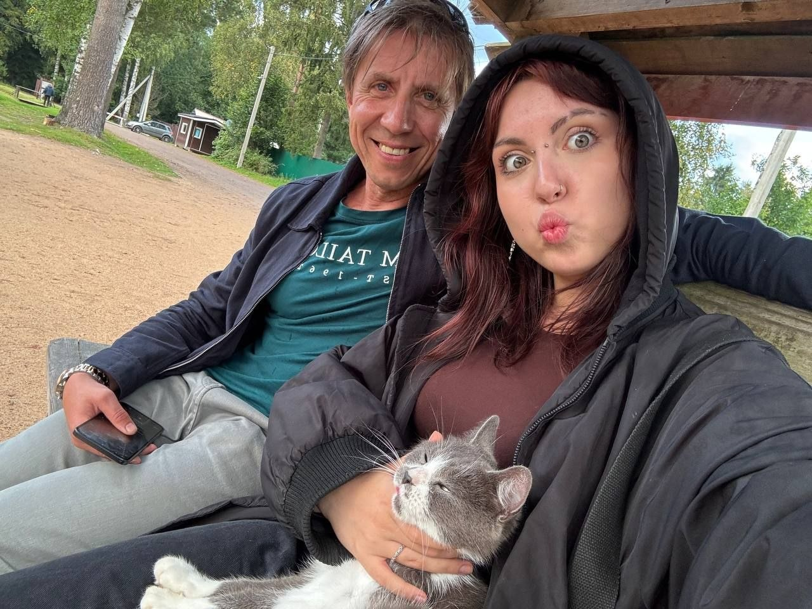
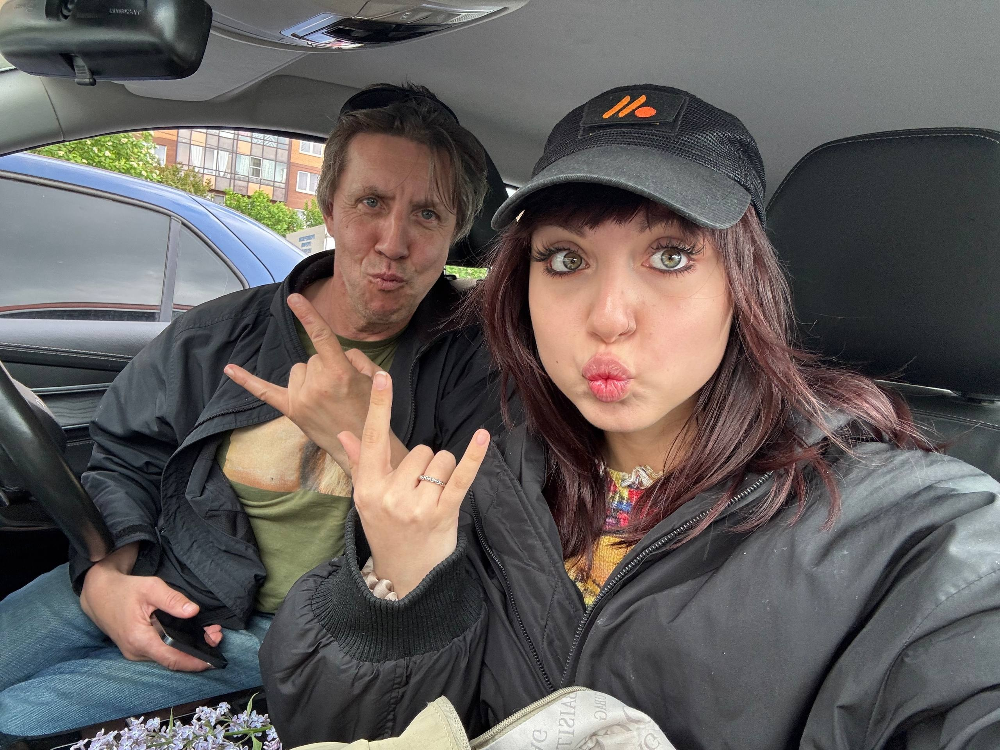

S&S
Соня и Саня. Хроники заброшек, музыка и ритуалы.
Отец и дочь: дружки, ниферы, сатанисты.
Соня и Саня. Хроники заброшек, музыка и ритуалы.
Отец и дочь: дружки, ниферы, сатанисты.


Мы — Саня и Соня. Я её отец и друг. У Сони два отца: один формальный по паспорту, но зато настоящий заботливый папа, а другой — нифер и распиздяй, правда родной. Это который я. Так уж вышло, и все всё знают.
Мы вместе снимаем бадди-муви про заброшки, ходим в караоке, поём за рулём. У нас есть лор с двумя её подругами — проводим нешуточные магические ритуалы. Она пишет музыку под псевдонимом Сонюшо и мечтает о сцене. Я просто рядом. И горжусь.
— Саня
Куда идти дальше.